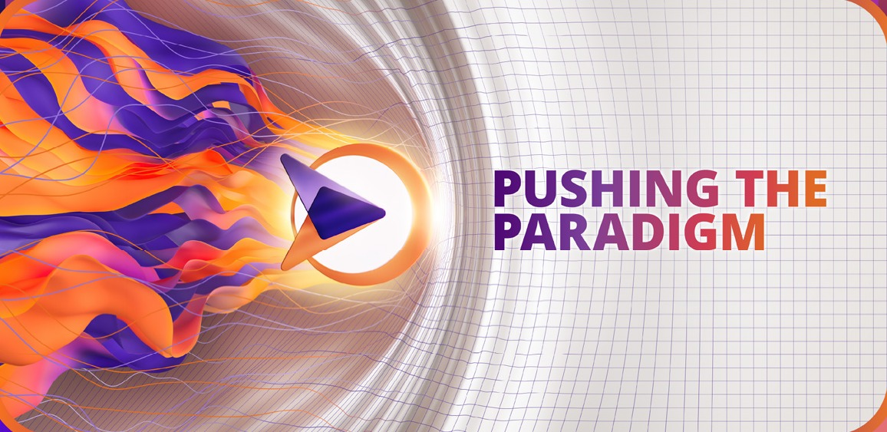
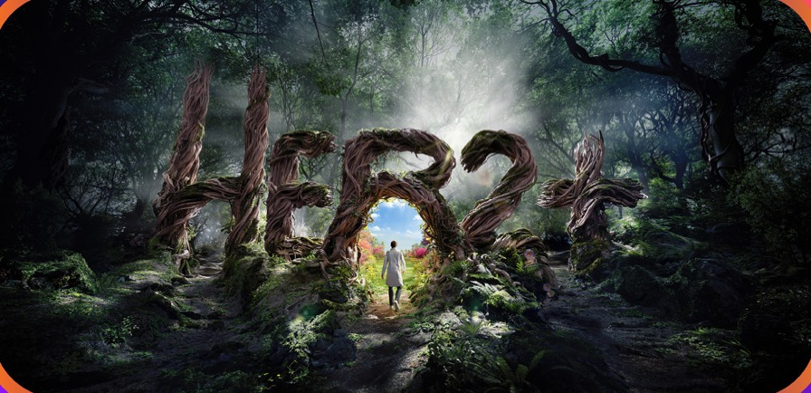
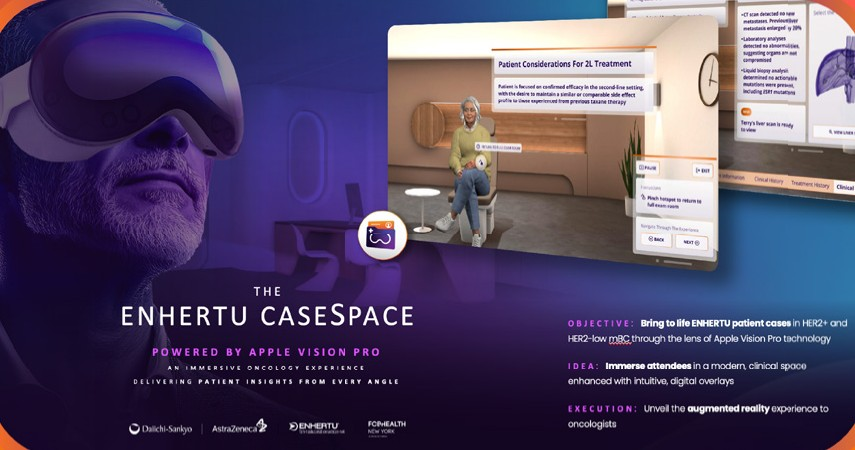
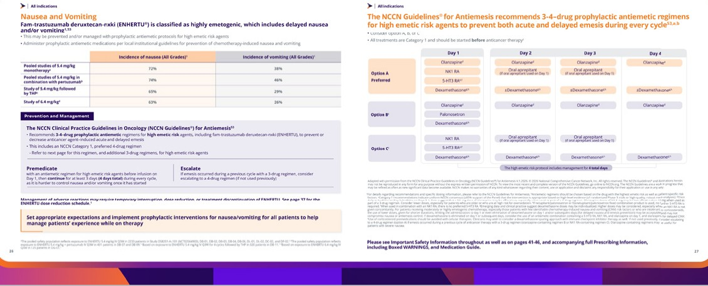
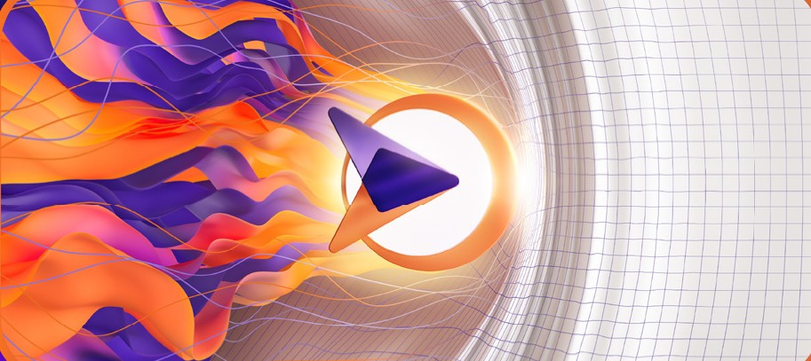
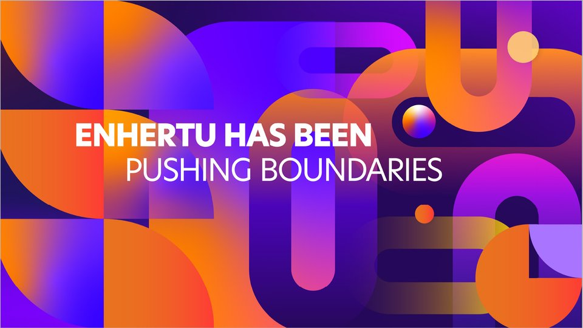

HTML + SVG + GSAP · 1920×1080 · scrubbable timeline
ENHERTU HAS BEEN
PUSHING BOUNDARIES
PUSHING WHAT’S POSSIBLE
FOR PATIENTS
AND, OF COURSE,
ENHERTU IS ALWAYS

READY?LET’SGO




BOARD 1

Make this video your own
Use the controls under the video to set up the version you want. Nothing on this screen is part of the video.
1Speed: slow it down to 0.25× or speed it up to 5×. The exported video plays at the speed you choose, so it gets longer or shorter.
2Gradient flow: how much the colours move, from Off through Subtle, Medium and Bold up to Wild, Extreme and Max.
3Layers: turn the Text, Copy shapes, Images and Sphere on or off.
4Board overlay: shows the storyboard frame in the corner so you can compare. It is never included in the exported video.
When it looks right: click Export settings…, choose the frames, resolution and frame rate, add your name and a note, then click Download settings. Send that file to Joe and Patrick; they'll export the final MP4 for the edit.
When it looks right: click Export video… to make the MP4 on this computer. To render a settings file someone sent you, use Load settings… in the same panel.